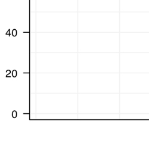
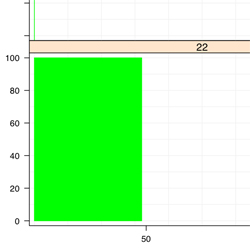
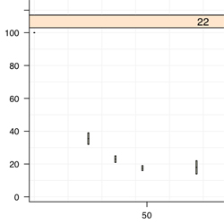
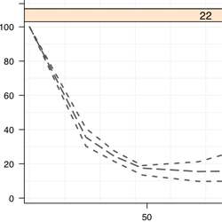
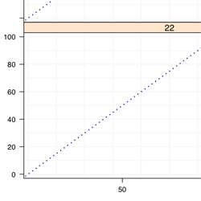
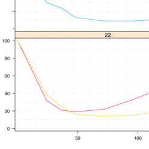
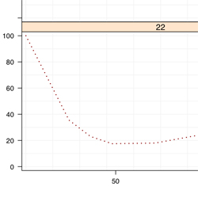
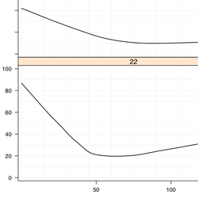
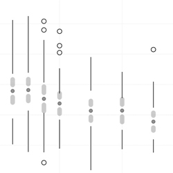

Variations
Inter Panel Functions
Description
- These 'variations' are placed within the panel function to plot the data.
- They can be re-ordered to have the desired look
- ex. 'plot.points' is performed before 'lines.by.id' to have the points plotted behind the lines connected by ID.
- All examples are done using warfarin.mdvpk.1 as the toy data set
Variations
Presented in suggested plot order. Download all panel functions in a source file.
Grid |
 |
Administration Range |
 |
Box and Whisker |
 |
Quantiles |
 |
a-b-line |
 |
Lines By ID |
 |
Mean Line |
 |
Loess Line |
 |
95% Confidence Interval |
 |
Points |

|